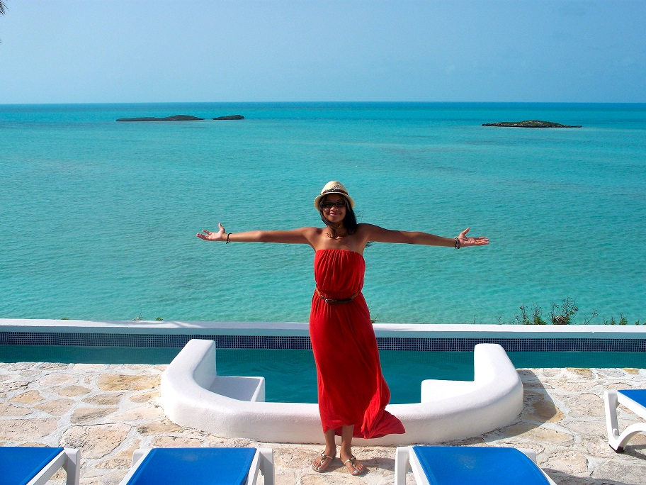
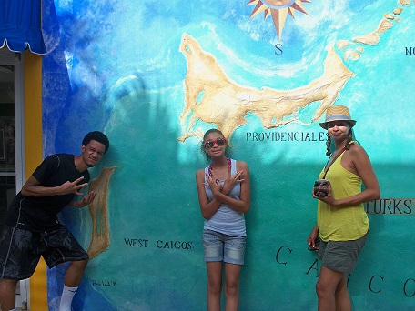

Need to get away? Interested in taking an International Vacation?
Go 4Ward's Mission is to ignite the international travel bug for first time international travelers. Our goal is to provide visitors to our site with advice on destination planning, trip budgeting, packing, safety/technology, and destination recommendations. The world has taken on a global dimension and it is important for people to experience other cultures. Travel is the most direct medium for engaging with other people from different backgrounds and acquiring first hand experience in diverse environments. We look forward to helping you Go 4Ward and Travel.
What Travel Does For You
- Appreciate Nature
- When exploring the world, always look up, down and all around so you can capture and appreciate the beauty of nature.
- Appreciate Diversity
- When traveling internationally you're exposed to different cultures, cuisines and customs. Be open and respectful of others cultures and customs and don't try to push your values on others.
- Learn Languages
- When traveling internationally try to learn a few conversational phrases of the country you're visiting, learn the currency, take local cooking class or even venture out on a photography tour.
| Live | Love | Laugh | Travel |
| Brazil |  | Thailand | |
| Aruba | Bahamas | ||
| Venice | St. Maarten | ||
| Turks | Caicos | ||
| Travel | Can Be | Educational | Impactful |